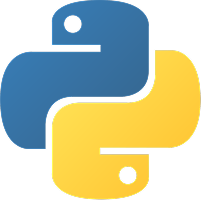

3D 프린터를 활용해 직접 설계한 모델을
제작하며 아이디어를 실제 결과물로 구현하는
과정을 경험했습니다. 설계 → 수정 → 출력 →
개선의 반복을 통해 문제 해결 능력을 기르고
있습니다.
천체 망원경을 활용해 행성 관측 및 촬영을
진행하며 광학 원리와 거리·빛의 특성을
탐구했습니다. 관측 데이터를 정리하며 패턴
분석과 기록 습관을 기르고 있습니다.

GongYi01's PortFolio
저의 포트폴리오를 시작합니다
스크롤 해주세요!
풀스택 개발자를 꿈꾸며 코드를 두드리는 학생입니다.
에러를 만나면 당황하기보다
왜 발생했는지 분석하는 걸 더 즐깁니다.
기능 구현에 그치지 않고,
실제로 동작하는 서비스를 만드는 개발자가 되는 것이
목표입니다.

HTML, CSS, JavaScript 기반의 반응형 웹 페이지 제작 경험 보유
Python, C 등 다양한 프로그래밍 언어에 대한 이해와 활용 능력 보유
3D 프린터를 활용해 직접 설계한 모델을
제작하며 아이디어를 실제 결과물로 구현하는
과정을 경험했습니다. 설계 → 수정 → 출력 →
개선의 반복을 통해 문제 해결 능력을 기르고
있습니다.
천체 망원경을 활용해 행성 관측 및 촬영을
진행하며 광학 원리와 거리·빛의 특성을
탐구했습니다. 관측 데이터를 정리하며 패턴
분석과 기록 습관을 기르고 있습니다.